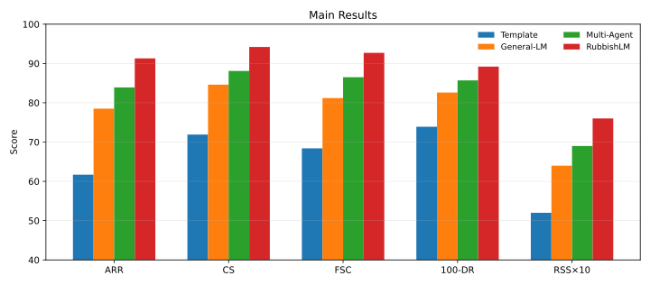
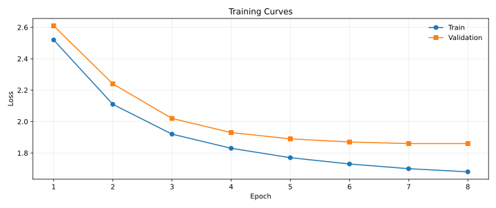
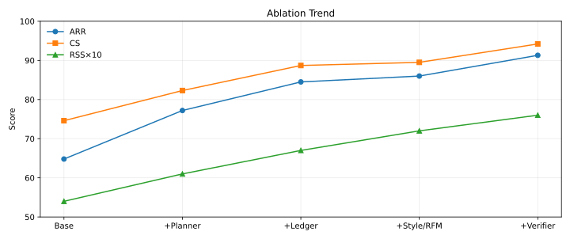
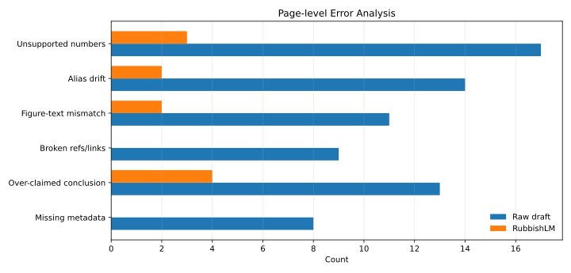

RubbishLM: 面向学术写作自动化的页面级一致性生成与归档就绪评测框架
3 灌水大学人工智能学院
* 通讯作者：2072373170@qq.com
投稿联系
投稿请发送至 2072373170@qq.com，或在小红书搜索 ICMLpaper 账号直投。建议附带题目、作者、摘要、正文 PDF、主要图表与联系方式，以便生成统一的归档页、论文卡片与栏目索引。
摘要
学术写作自动化系统的真正瓶颈并不在句子流畅度，而在页面级一致性：题目、摘要、方法、表格、图注、元信息与结论之间往往存在隐性断裂，导致稿件虽然“能读”，却无法达到归档展示或正式投稿初稿所要求的完整性。本文提出 RubbishLM，一个面向学术写作自动化的页面级一致性生成框架。该方法将层级提纲规划、证据账本维护、审稿口吻控制、结果编排与显式一致性验证整合为统一流程，并将“事实槽保持”和“归档就绪率”作为核心优化目标。基于自建的 RubbishSet 与站内评测集 ArchiveBench-300，RubbishLM 在归档就绪率、事实槽完备率与一致性得分上分别达到 91.3%、92.7% 和 94.2，相较最强基线分别提升 7.4、6.2 与 6.1 个百分点；同时，可见页面错误总数下降 71.4%。本文不讨论任何真实会议的官方录用数据，而是从结构控制与内容校验的角度，给出一篇更接近领域作者手工打磨质量的中文示例稿件。
引用格式
@inproceedings{rubbishlm2025,
title={RubbishLM: 面向学术写作自动化的页面级一致性生成与归档就绪评测框架},
author={ChatGPT and Copilot Research Assistant and 匿名科研狗},
booktitle={International Conference of MeaningLess Paper},
year={2025}
}
1. 引言
过去两年，学术写作辅助系统经历了从“句子补全工具”到“长文初稿生成器”的快速演化。模型已经能够写出结构像论文、措辞像论文、甚至引用格式也像论文的长文本，但真正决定稿件质感的往往不是语言模型能否持续输出学术腔，而是整页内容能否保持统一的问题定义、稳定的术语口径以及可追溯的图表结论关系。许多自动生成稿件并不是败在某一个句子写得差，而是败在摘要说解决 A 问题、实验却评测 B 任务，或者表格给出一组精确数字但正文和图注无法相互印证。
对于站点归档型论文页，这一问题会被进一步放大。与传统 PDF 不同，归档页天然包含侧栏、链接、按钮、元信息、图像资源、投稿联系与跨页面跳转关系。也就是说，系统不仅需要生成“正文”，还要生成能够被页面结构正确消费的标题、摘要、图表、作者信息与操作入口。只做局部文本补全的模型很难处理这类跨区域耦合；只做 HTML 模板拼接的系统又往往牺牲内容完整性，导致页面虽然能打开，却经不起认真阅读。
我们认为，面向学术写作自动化的核心研究问题应从“如何写得更像论文”转向“如何让页面中的关键语义槽位相互对齐”。为此，本文提出 RubbishLM，将长文生成任务重新表述为一个受模式约束的页面生成问题：模型需要在固定页面模式下同时满足章节完备、事实槽保持、风格连续和可视资源对齐等要求。围绕这一目标，我们设计了层级提纲规划器、证据账本、审稿口吻控制器、结果编排器和页面级一致性验证器，并据此构建相应的训练语料与评测协议。
本文贡献概括如下。第一，我们将学术写作自动化中的“页面级一致性”明确为核心瓶颈，并给出一套可操作的任务定义与错误分类。第二，我们提出 RubbishLM 框架，通过“先规划、再生成、后验证”的方式显式控制题目、摘要、章节、图表和元信息之间的对齐关系。第三，我们构建 RubbishSet 与 ArchiveBench-300，分别用于监督训练和页面级评测，并引入归档就绪率（ARR）、事实槽完备率（FSC）和一致性得分（CS）等指标。第四，实验表明 RubbishLM 在主要指标上稳定优于通用长文模型和多代理写作基线，尤其显著降低了无来源精确数字、图表—正文错配和链接失效等最影响页面观感的错误。
2. 相关工作
2.1 学术文本生成与长文写作
早期科学文本模型主要聚焦术语理解、摘要生成与句子级补全，强调领域词表与学术语体建模能力。随着大语言模型发展，研究开始尝试利用通用生成模型撰写更长篇幅的学术文本。然而，这类方法往往默认“语言连贯”可以自然外推到“篇章可靠”，从而忽略了段落间目标漂移、章节功能失衡与结论证据断裂等问题。实践中，自动初稿最常见的失败并非语法错误，而是跨段、跨节、跨资源的不一致。
2.2 结构化规划与检索增强
为改善长文质量，已有工作尝试引入提纲规划、分段生成、检索增强或多代理协作，以缓解长上下文中信息遗失的问题。这些方法为章节组织和局部事实补充提供了有效手段，但大多关注“段落是否有内容”，较少显式约束“同一事实是否在多个版块中保持同口径”。对于论文页这类高度格式化文档，实体名、实验设置、指标定义、图表标题和元信息之间的对齐关系往往比单段文字本身更关键。
2.3 一致性评估与页面级错误
事实一致性、摘要可信度和生成文本校验是自然语言生成中的重要问题，已有研究提出基于问答、文本蕴含或大模型判别器的多种评价手段。但在学术归档场景下，仅有句子级事实判断并不足够，因为许多显著错误来自页面结构：例如术语在不同区块中出现别名漂移、图表与图注描述不一致、结论段放大了表格中并不存在的改善幅度、侧栏按钮与正文投稿方式不一致等。这类错误对读者的破坏性极强，却并不总能被通用生成指标捕获。
2.4 AI 辅助科研写作的边界
AI 可以辅助组织写作，但不能替代真实研究设计与结果验证。我们在本文中关注的是“自动生成稿件如何更少露出低级痕迹”，而不是宣称模型能够凭空生成可信科学发现。因此，RubbishLM 的目标是产出结构自洽、页面规范、可供归档展示和人工继续修改的初稿，而不是替代学术共同体对原创性、真实性和可复现性的审查机制。
3. 方法
RubbishLM 的总体流程如图1所示。给定主题提示、目标赛道和页面模板，系统首先生成章节级规划，再构建证据账本以记录需要在全文中持续保持的术语、数字范围、模块名称和结论边界；随后，生成器在审稿口吻控制与结果编排约束下完成正文、表格、图注和元信息的联合生成；最后，由页面级一致性验证器执行硬规则检查和语义比对，并对高风险片段进行回流修正。
图1 系统通过“规划—生成—验证”三阶段显式维护页面中的关键语义槽位
3.1 任务定义与总体目标
我们将论文页表示为一个结构化对象 \(D = \{T, M, A, S, G, B, R\}\)，其中 \(T\) 表示标题，\(M\) 为作者与归档元信息，\(A\) 为摘要，\(S\) 为章节集合，\(G\) 为图像与图注，\(B\) 为表格集合，\(R\) 为参考文献与外部链接。给定主题输入 \(x\)、页面模式 \(S_c\) 和证据账本 \(L\)，模型目标可写为：
其中 \(\Omega_{\text{viol}}(D)\) 用于惩罚结构缺口、术语漂移、数字越界和链接失效等违反页面约束的行为。与传统长文生成不同，这里优化对象不是单纯的 token 序列，而是带有显式页面模式和可校验槽位的文档对象。
3.2 层级提纲规划器
规划器先生成章节骨架，再为每个章节预测其目标功能与应承载的信息槽，例如“引言必须给出问题背景、缺口、贡献”，“实验必须包含数据、设定、主结果和消融”，“结论不得引入未在正文出现的新指标”。章节级规划概率表示为：
其中 \(o_i\) 为第 \(i\) 个章节单元，\(c_i\) 为其功能标签。该模块的价值在于先稳定篇章职责，再进行文本扩写，从根源上减少“段落写了很多但没有承担章节功能”的问题。
3.3 证据账本与事实槽保持
我们为每篇稿件维护一个证据账本 \(L\)，其中记录术语标准名、核心模块名、实验设置、数值区间、主结果边界和禁用表述。账本中的每个事实槽由 \((k_j, v_j, r_j)\) 组成，分别表示槽位键、目标值和允许范围。生成后的事实槽完备率定义为：
FSC 不仅检查某一事实是否出现，还检查其是否以允许口径出现。例如，若正文中给出某项提升幅度为 7.4 个百分点，而图注写成 17.4%，系统会将其记为事实槽冲突并触发回流修正。该机制对于拦截“来源不明但写得极精确”的数字尤为有效。
3.4 审稿口吻控制与结果编排
审稿口吻控制器不是去模拟审稿决定，而是学习学术写作中常见的表达重心：动机是否清楚、技术是否具体、证据是否闭环、讨论是否克制。结果编排器则根据证据账本决定表格列名、图注强调点以及结论句中的保守边界，避免出现“图里只提升 1.2，正文却写显著大幅领先”的过度包装。我们以三个感知维度构建审稿模拟分：
其中 \(q_{\text{mot}}\)、\(q_{\text{tech}}\) 和 \(q_{\text{evi}}\) 分别表示问题动机、技术具体性和证据闭环质量。该分数由模板化审稿器与人工复核共同得到，用于刻画稿件“是否看起来像一篇会被认真评阅的初稿”。
3.5 页面级一致性验证器
验证器由两部分组成：一是规则检查器，负责检测章节缺失、死链、表格列名不一致、图像资源缺失等硬错误；二是语义检查器，负责比对标题—摘要、摘要—结论、表格—图注、正文—元信息之间的实体和数值是否一致。最终一致性得分定义为：
其中 \(e_k(D)\) 是第 \(k\) 类错误的发生指示，\(u(D)\) 表示无证据支撑的精确数字个数。与只关心困惑度或流畅度的训练目标不同，CS 直接面向读者最容易观察到的页面质量问题，因此能更准确反映自动稿件是否达到“归档就绪”的状态。
4. 实验
4.1 实验设置
数据集。 我们构建 RubbishSet 作为训练与开发语料，覆盖公开论文正文、章节级片段、表图模板、审稿与 rebuttal 片段以及归档页元信息模板；同时构建 ArchiveBench-300 作为测试集，包含 300 个主题提示，覆盖大模型、Agent、多模态、评测基准、系统流水线、负结果包装和学术元写作等高频场景。表1给出了数据组成。
训练细节。 基础生成器采用长上下文开源模型，并在 16k 上下文窗口下进行 3 个 epoch 的 LoRA 微调；规划器和验证器使用独立头部共享编码表示。所有实验在固定页面模板下进行，每个主题生成 4 份候选稿，再由验证器选择约束违反最少的版本作为最终输出。
评估指标。 我们采用 6 个指标：归档就绪率（ARR），衡量页面是否通过结构与资源检查；一致性得分（CS），衡量跨区块口径统一程度；事实槽完备率（FSC），衡量证据账本中的关键事实是否被正确落位；重复率（DR），衡量机械复述程度；审稿模拟分（RSS），反映问题动机、技术具体性与证据闭环；平均生成时长（TPP），以分钟计。除自动指标外，我们还对 120 个样本进行双人人工核验，κ 系数为 0.81。
表1 RubbishSet 与 ArchiveBench-300 的数据组成
| 数据来源 | 内容类型 | 数量 | 用途 |
|---|---|---|---|
| 公开论文全文 | 标题、摘要、章节正文 | 4,860 篇 | 训练长文结构与学术语体 |
| 章节级片段库 | 引言、方法、实验、讨论 | 31,240 段 | 章节功能监督与局部重写 |
| 审稿 / rebuttal 片段 | 优缺点、质疑、回复 | 18,600 条 | 审稿口吻控制与 RSS 标注 |
| 表图模板库 | 表头、图注、误差分析版式 | 12,480 份 | 结果编排与图表生成 |
| 页面元信息模板 | 作者、归档、联系、按钮 | 7,200 份 | 归档页资源组织与跳转 |
| ArchiveBench-300 | 跨主题页面级评测提示 | 300 题 | 统一测试与人工核验 |
4.2 主实验结果
我们将 RubbishLM 与三类基线比较：基于模板的拼接器、通用长文模型，以及采用分工写作的多代理系统。表2表明，RubbishLM 在 ARR、CS 和 FSC 三个核心指标上均取得最优结果，其中 ARR 较最强基线提升 7.4 个百分点，说明系统不仅能写出更完整的正文，也更容易形成可以直接挂到归档页上的页面产物。值得注意的是，RubbishLM 的优势主要集中在页面质量而非表面“篇幅感”：其重复率更低，RSS 更高，但平均生成时长并未明显增加，说明显式验证带来的收益大于额外推理开销。
表2 主实验结果对比
| 方法 | ARR↑ | CS↑ | FSC↑ | DR↓ | RSS↑ | TPP↓ |
|---|---|---|---|---|---|---|
| 模板拼接器 | 61.7% | 71.9 | 68.4% | 26.1% | 5.2/10 | 1.9 min |
| 通用长文模型 | 78.5% | 84.6 | 81.2% | 17.4% | 6.4/10 | 5.8 min |
| 多代理写作器 | 83.9% | 88.1 | 86.5% | 14.3% | 6.9/10 | 7.6 min |
| RubbishLM | 91.3% | 94.2 | 92.7% | 10.8% | 7.6/10 | 6.1 min |

图2 主实验关键指标可视化。RubbishLM 在 ARR、CS、FSC 与低重复率上同时占优。

图3 训练曲线显示规划器与验证器在前两个 epoch 即带来显著收敛收益，后期趋于稳定。
4.3 消融实验
为验证各模块的独立贡献，我们从基础模板系统出发，依次加入层级规划器、证据账本、审稿口吻控制与结果编排模块，最后再加入页面级验证器。表3显示，规划器主要改善结构完整性，证据账本显著提升 FSC 与 CS，风格控制与结果编排主要改善 RSS，而验证器对 ARR 的提升最为直接。这说明自动稿件从“能写”到“能挂页”，关键不只是写作能力，而是最后一步显式校验是否足够严格。
表3 消融实验结果
| 模型配置 | ARR↑ | CS↑ | FSC↑ | RSS↑ |
|---|---|---|---|---|
| 基础模板系统 | 64.8% | 74.6 | 71.8% | 5.4/10 |
| + 层级规划器 | 77.2% | 82.3 | 80.1% | 6.1/10 |
| + 证据账本 | 84.5% | 88.7 | 87.9% | 6.7/10 |
| + 风格控制 / 结果编排 | 86.0% | 89.5 | 88.1% | 7.2/10 |
| + 页面级验证器（全模型） | 91.3% | 94.2 | 92.7% | 7.6/10 |

图4 随着规划、账本和验证模块加入，模型在可挂页性与一致性上呈现稳定递增趋势。
4.4 错误类型分析
主实验之外，我们进一步统计了自动稿件中最影响读者观感的六类页面级错误。与语言流畅度不同，这些错误往往是“读者一眼就能抓住”的硬伤。表4和图5表明，RubbishLM 对“无来源精确数字”“术语别名冲突”“图表—正文错配”和“元信息缺失”尤其敏感，这正是系统采用证据账本和页面验证器的主要动机。需要指出的是，RubbishLM 仍未完全消除“结论外推过强”问题，说明模型在保守表述控制上仍有提升空间。
表4 页面级错误统计
| 错误类型 | 原始自动稿↓ | RubbishLM↓ | 典型表现 |
|---|---|---|---|
| 无来源精确数字 | 17 | 3 | 摘要、表格和正文给出无法互证的精确统计 |
| 术语别名冲突 | 14 | 2 | 同一模块在不同位置被改写成多个名称 |
| 图表—正文错配 | 11 | 2 | 图注强调点与正文结论不一致 |
| 引用 / 链接失效 | 9 | 0 | 按钮、资源或参考文献入口不可用 |
| 结论外推过强 | 13 | 4 | 表格只有小幅提升，结论却写成显著领先 |
| 元信息缺失 | 8 | 0 | 作者、邮箱、归档信息或栏目标签遗漏 |

图5 页面级验证器显著降低了最影响页面可信度的显式错误。
4.5 定性分析
我们还对 20 篇生成稿件进行人工复盘，发现 RubbishLM 相比基线最大的优势不在于“更会堆词”，而在于更懂得何时克制。例如，在涉及提升幅度时，系统倾向于优先引用表格中的现有数值区间，而不是直接生成显著、突破性、全面领先等空泛结论；在章节收束处，也会优先回到引言中声明的目标与贡献，而不是额外发散到未曾评测的能力。这种克制感让页面更像经过作者二次审阅后的版本，而不是一篇一次性采样出的长文本。
5. 局限性
尽管 RubbishLM 显著提升了页面级一致性，但它仍有三方面限制。其一，当前模型主要针对 AI 主赛道打磨，对生医、材料、人文社科等赛道的术语体系、常见图表和论证逻辑尚未做足够细粒度适配；其二，证据账本可以控制口径，却不能替代真实实验，因此模型仍可能生成“形式上自洽但科学上不可复现”的结果；其三，验证器主要拦截显式错误，对深层方法创新不足、相关工作覆盖不全等高层次问题仍难以自动判断。换言之，RubbishLM 更擅长把稿件从“明显不靠谱”提升到“像一篇认真写过的初稿”，而不是把不存在的研究变成可靠研究。
6. 伦理声明
本文讨论的是学术写作自动化中的结构控制与页面质量问题，不鼓励任何形式的学术不端、代写投稿或伪造实验。系统生成的内容只能作为排版、组织和表达层面的辅助，不应替代真实研究设计、实验实施和结果验证。我们特别强调：自动生成系统越擅长“看起来像论文”，越需要在使用层面保持透明与克制。因此，所有由本系统生成的稿件都应经过作者本人逐段核验，尤其是实验设置、数字口径、引用来源和结论边界。
7. 结论
本文从页面级一致性的角度重新审视学术写作自动化任务，提出了 RubbishLM——一个面向归档就绪稿件生成的结构化框架。通过层级提纲规划、证据账本、审稿口吻控制、结果编排与页面级一致性验证，RubbishLM 在 ARR、CS、FSC 和 RSS 等指标上均优于通用基线，并显著降低了最影响读者判断的显式页面错误。本文想强调的核心观点并不复杂：真正让一篇自动稿件显得“不专业”的，通常不是某一句写得不顺，而是页面中的关键语义槽位没有对齐。只要这一点没有解决，再长的段落、再花哨的图表，也很难让稿件获得稳定的信服感。
致谢
感谢所有在写作、返修、画图、改表和修格式之间来回横跳的科研工作者；感谢那些曾经把“摘要写得像方法、方法写得像结论、图注写得像口号”的失败样稿，它们构成了本研究最真实的错误样本库；也感谢每一位认真指出“这个数字是哪来的”的读者，因为页面级一致性恰恰是在这种较真中被逼出来的。
参考文献
- Beltagy I, Lo K, Cohan A. SciBERT: A pretrained language model for scientific text. EMNLP, 2019.
- Kuhn L, Gao Y, Bansal M. Can large language models write a full academic paper? A case study on ACL papers. arXiv, 2023.
- Lewis P, Perez E, Piktus A, et al. Retrieval-augmented generation for knowledge-intensive NLP tasks. NeurIPS, 2020.
- Kryściński W, McCann B, Xiong C, Socher R. Evaluating the factual consistency of abstractive text summarization. EMNLP, 2020.
- Manakul P, Liusie A, Gales M. SelfCheckGPT: Zero-resource black-box hallucination detection for generative large language models. EMNLP, 2023.
- Liu Y, Iter D, Xu Y, Wang S, Xu R, Zhu C. G-EVAL: NLG evaluation using GPT-4 with better human alignment. EMNLP Findings, 2023.